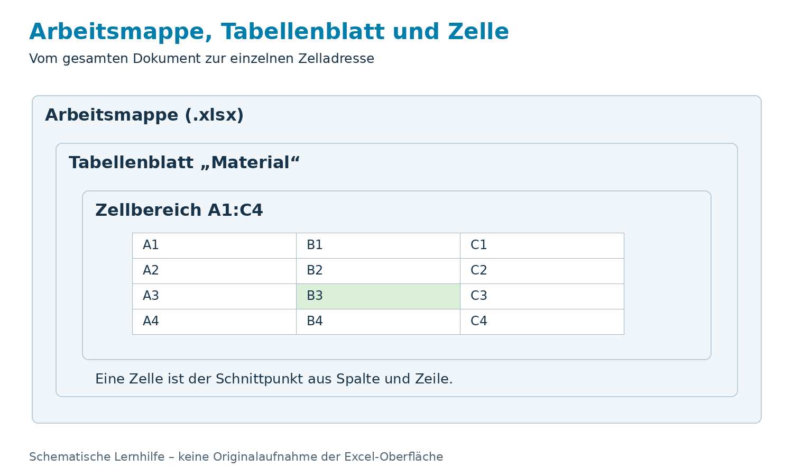
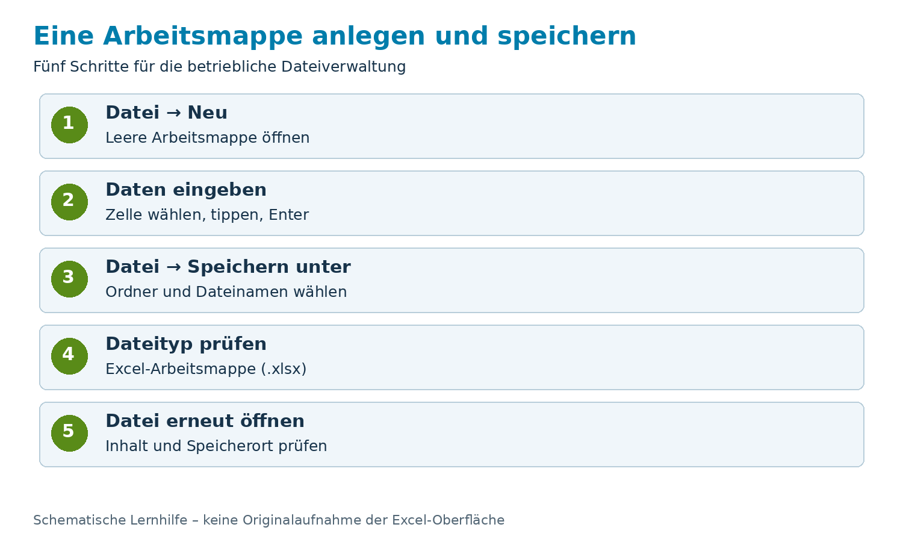

M2 – Excel-Grundlagen und Benutzeroberfläche
Global Bike Deutschland GmbH – Verwaltung
1. Warum Excel im Büro eingesetzt wird
In der Verwaltung werden Informationen regelmäßig ergänzt, gesucht und ausgewertet. Eine Textverarbeitung wie Word eignet sich besonders für Geschäftsbriefe und längere Texte. Excel eignet sich besonders für strukturierte Listen, wiederkehrende Berechnungen und grafische Auswertungen. Eine Excel-Datei kann beispielsweise eine Materialübersicht enthalten, deren Gesamtkosten sich nach einer Mengenänderung neu berechnen lassen, sofern passende Formeln vorhanden sind.
2. Aufbau einer Arbeitsmappe

| Begriff | Bedeutung |
|---|---|
| Arbeitsmappe | Gesamte Excel-Datei mit einem oder mehreren Tabellenblättern |
| Tabellenblatt | Einzelne Arbeitsfläche innerhalb der Datei |
| Spalte | Senkrechter Bereich, bezeichnet mit Buchstaben, z. B. B |
| Zeile | Waagerechter Bereich, bezeichnet mit Zahlen, z. B. 3 |
| Zelle | Schnittpunkt einer Spalte und einer Zeile |
| Zelladresse | Eindeutige Position innerhalb eines Blatts, z. B. B3 |
| Zellbereich | Gruppe von Zellen, z. B. A1:C4 (einschließlich der Randzellen) |
| Aktive Zelle | Aktuell ausgewählte Zelle, erkennbar am Auswahlrahmen |
B3 bedeutet Spalte B, Zeile 3. A1:C4 umfasst zwölf Zellen. Dieselbe Zelladresse kann auf verschiedenen Tabellenblättern vorkommen.
3. Orientierung auf dem Bildschirm

Die Abbildung ist eine schematische Orientierungshilfe, kein Screenshot. Die genaue Darstellung hängt von Excel-Version, Fenstergröße und Betriebssystem ab. Die Klickwege beziehen sich auf deutschsprachiges Excel für Windows (Desktop).
| Bereich | Aufgabe |
|---|---|
| Titelleiste | Zeigt unter anderem den Namen der Arbeitsmappe |
| Registerkarten | Ordnen Befehle nach Aufgabenbereichen |
| Menüband | Enthält die Befehle der gewählten Registerkarte |
| Namensfeld | Zeigt die Adresse der aktiven Zelle; ermöglicht den Sprung zu einer Adresse |
| Bearbeitungsleiste | Zeigt und bearbeitet den Inhalt oder die Formel einer Zelle |
| Blattregister | Wechsel zwischen Tabellenblättern |
| Pluszeichen am Blattregister | Neues Tabellenblatt anlegen |
| Statusleiste | Zeigt Statusinformationen und ggf. Kennzahlen zur Auswahl |
| Zoom | Verändert die Bildschirmdarstellung, nicht die Druckgröße |
| Bildlaufleisten | Verschieben den sichtbaren Ausschnitt |
Wichtige Registerkarten: Datei (Öffnen, Speichern, Drucken), Start (Bearbeiten, Formatieren), Einfügen (u. a. Diagramme), Seitenlayout (Druckgestaltung), Formeln (Funktionen), Daten (Sortieren und Filtern), Ansicht (Darstellung).
4. Eine Arbeitsmappe erstellen und speichern

- Excel öffnen und „Leere Arbeitsmappe“ auswählen; alternativ Datei → Neu.
- Eine Zelle anklicken, Inhalt eingeben und mit Enter bestätigen.
- Datei → Speichern unter wählen. Je nach Version erscheint zunächst eine Speicherortauswahl; gegebenenfalls „Durchsuchen“ wählen.
- Einen geeigneten Ordner und einen eindeutigen Namen wählen, beispielsweise
GB_Materialuebersicht_Uebung.xlsx. - Dateityp „Excel-Arbeitsmappe (*.xlsx)“ prüfen und speichern.
- Bei weiteren Änderungen Strg+S verwenden.
- Die Datei schließen und über Datei → Öffnen erneut aufrufen. Prüfen, ob die richtige Datei geöffnet wurde.
„Speichern“ aktualisiert die aktuelle Datei. „Speichern unter“ ermöglicht eine neue Datei mit anderem Namen oder Speicherort. In manchen Microsoft-365-Umgebungen heißt der entsprechende Befehl „Kopie speichern“. Eine Kopie schützt die unveränderte Ausgangsdatei.
XLSX ist das übliche bearbeitbare Excel-Format. PDF dient vor allem der festen Darstellung, CSV enthält tabellarische Textdaten und bewahrt keine vollständige Excel-Arbeitsmappe mit mehreren Blättern und Formeln. Für den betrieblichen Arbeitsauftrag ist XLSX erforderlich.
5. Tabellenblätter organisieren
- Neues Blatt: Pluszeichen neben den Blattregistern anklicken.
- Umbenennen: Doppelklick auf den Blattnamen, neuen Namen eingeben, Enter.
- Reihenfolge ändern: Blattregister mit der Maus an die gewünschte Position ziehen.
- Kopieren: Rechtsklick auf Blattregister → Verschieben oder Kopieren → Kopie erstellen → OK.
- Löschen: Rechtsklick → Löschen. Vorher prüfen, ob das Blatt noch benötigt wird oder Formeln darauf verweisen. Das Löschen eines Blatts lässt sich nicht zuverlässig rückgängig machen.
Aussagekräftige Blattnamen helfen anderen Mitarbeitenden bei der Orientierung. Ein Blattname darf höchstens 31 Zeichen enthalten und keine der Zeichen : / \ ? * [ ].
6. Daten eingeben und bearbeiten
Excel unterscheidet unter anderem Texte, Zahlen, Datumswerte und Formeln. Formeln beginnen normalerweise mit einem Gleichheitszeichen. Die ausführliche Behandlung folgt in M4–M7.
| Handlung | Vorgehen |
|---|---|
| Eingeben | Zelle anklicken, tippen, Enter |
| Nach rechts wechseln | Tabulatortaste |
| Inhalt ersetzen | Zelle auswählen und neuen Inhalt eingeben |
| Inhalt gezielt bearbeiten | Doppelklick, F2 oder Bearbeitungsleiste |
| Eingabe abbrechen | Esc vor dem Bestätigen |
| Inhalt entfernen | Zelle markieren, Entf |
| Rückgängig | Strg+Z, soweit die Aktion rückgängig gemacht werden kann |
| Kopieren | Strg+C, Ziel auswählen, Strg+V |
| Ausschneiden | Strg+X, Ziel auswählen, Strg+V |
Entf entfernt den Zellinhalt, nicht die Zelle selbst. Das Löschen ganzer Zellen oder Zeilen kann andere Daten verschieben. Beim Einfügen können bestehende Inhalte überschrieben werden. Vor größeren Änderungen empfiehlt sich eine Arbeitskopie.
7. Zellen und Bereiche auswählen
Eine einzelne Zelle wird angeklickt. Einen zusammenhängenden Bereich markiert man durch Ziehen mit gedrückter Maustaste oder über das Namensfeld: A1:C4 eingeben und Enter drücken. Ganze Zeilen oder Spalten werden über ihre Überschriften markiert. Mit gedrückter Strg-Taste können getrennte Bereiche ausgewählt werden.
Das kleine Quadrat am unteren rechten Rand einer Zellmarkierung heißt Ausfüllkästchen. Durch Ziehen lassen sich Inhalte kopieren oder geeignete Datenreihen fortsetzen. Bei Formeln können sich Zellbezüge ändern; dies wird in M7 erklärt. Eine einzelne Zahl wird beim normalen Ziehen häufig kopiert. Zwei markierte Startwerte wie 1 und 2 ermöglichen eine fortlaufende Reihe.
8. Unabhängiges Anwendungsbeispiel: Materialübersicht
Die Verwaltung erfasst beispielhaft den Bestand einiger Besprechungsmaterialien. Diese Übungsdaten gehören nicht zu M1.
| Zeile | A – Material | B – Bestand | C – Einheit |
|---|---|---|---|
| 1 | Material | Bestand | Einheit |
| 2 | Notizblock | 8 | Stück |
| 3 | Stift | 15 | Stück |
| 4 | Mappe | 6 | Stück |
Die Überschriften stehen in Zeile 1. In B3 steht der Zahlenwert 15, in A3 der Text Stift. Der gesamte Datenbereich ist A1:C4.
Eine mögliche Vorgehensweise: Eine leere Arbeitsmappe öffnen, das erste Blatt „Besprechungsmaterial“ nennen, die drei Überschriften eingeben und anschließend die Daten zeilenweise erfassen. Die Datei unter einem eindeutigen Übungsnamen speichern. Bei einer Bestandsänderung wird nur der betreffende Wert geändert. Die Einheit bleibt in einer eigenen Spalte, damit der Bestand als Zahl weiterverarbeitet werden kann.
9. Typische Anfängerfehler
| Beobachtung | Mögliche Ursache und Abhilfe |
|---|---|
| Datei nicht auffindbar | Speicherort nicht beachtet; über Datei → Öffnen oder den Datei-Explorer suchen |
| Ausgangsdatei überschrieben | Vor der Bearbeitung eine Kopie anlegen |
| Falsches Blatt bearbeitet | Blattregister und Blattnamen prüfen |
| Eingabe in falscher Zelle | Aktive Zelladresse im Namensfeld kontrollieren |
| Zahl mit Einheit als Text eingegeben | Zahl und Einheit getrennt erfassen |
| Inhalt versehentlich ersetzt | Soweit möglich Strg+Z verwenden |
| Anzeige zu klein | Zoom anpassen; Druckeinstellungen bleiben davon getrennt |
| Datei als PDF statt XLSX gespeichert | Bearbeitbare XLSX-Datei sichern |
10. Freiwillige Selbstkontrolle
Die folgenden Fragen dienen ausschließlich der eigenen Orientierung. Es ist keine zusätzliche Abgabe erforderlich.
- Worin unterscheiden sich Arbeitsmappe und Tabellenblatt?
- Welche Zelle bezeichnet C5?
- Wie viele Zellen umfasst A1:B3?
- Wo lässt sich der Inhalt der aktiven Zelle bearbeiten?
- Wie kann eine Ausgangsdatei unverändert erhalten bleiben?
- Warum ist XLSX für die weitere Bearbeitung geeigneter als PDF?
Kontrollhinweise: Arbeitsmappe = Datei, Tabellenblatt = einzelne Arbeitsfläche. C5 = Spalte C, Zeile 5. A1:B3 = sechs Zellen. Bearbeitungsleiste oder direkte Zellbearbeitung. Eine Kopie unter neuem Namen speichern. XLSX erhält die bearbeitbare Arbeitsmappe einschließlich ihrer Formeln und Blätter.
11. Weiterführende Materialien
M3 vertieft Tabellenstruktur und Gestaltung; M4 die Datenformate; M5–M7 die Berechnungen und Zellbezüge; M13 die Druckaufbereitung. Die freiwillige Ü1 dient der praktischen Vertiefung. M1 bleibt die Grundlage des eigentlichen betrieblichen Arbeitsauftrags.